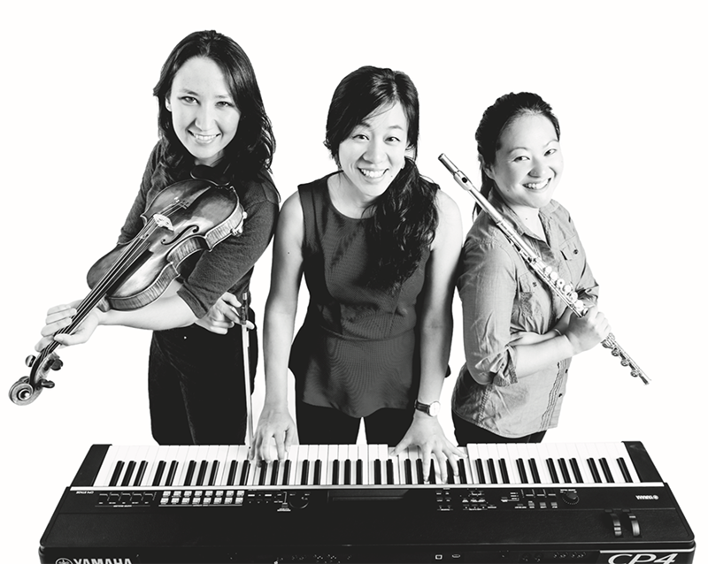

Teaching is an irreplaceable part of my life as a musician. Just as my own piano teachers have helped me grow as a person and a musician, so I strive to give back by being a compassionate, flexible, and communicative music educator, to create a positive environment for every learner, and to help each student derive enjoyment and satisfaction from their efforts and the achievement of their personal goals in music.
I have experience teaching piano to students at a wide variety of ages, with diverse musical backgrounds and learning styles, and in classroom, private instruction, and even online settings. I am currently on the teaching faculty of the Indiana University Young Pianists program, and have previously held appointments as an Associate Instructor for the Indiana University Secondary Piano Program and an elementary music classroom assistant for two years through the San Francisco Conservatory of Music's Conservatory in the Schools program. 
Photo by Marco Sanchez for the San Francisco SymphonyIn 2016, I toured in a trio through all the public elementary schools in San Francisco with the San Francisco Symphony's educational outreach program Adventures in Music, an incredibly rewarding experience that made me more passionate about the importance of accessibility of music for all.
I've been lucky to meet some wonderful people as my students during my time at IU. Here's some of the feedback I've received from them:
She is so kind and encouraging. She always pushes me to do my best.
Elizabeth Yao is very enthusiastic about teaching, and took the time to help me with piano skills that I was struggling with. She made sure that my needs as a student were met, taking time to figure out my level of experience and giving me assignments that both challenged me and weren’t impossible for my level. She helped create a very productive learning environment by giving constructive critique when needed and encouraging me to challenge myself.
Elizabeth has been one of the most positive, helpful instructors I've had so far at IU. She is very attentive to the amount I have practiced and acknowledged my hard work/the things I struggle with. She has helped me to develop specific practicing strategies that have helped me to improve my playing. I feel very comfortable in asking for help and the learning environment is very positive.
If you are interested in lessons (in-person or online!), please contact me!